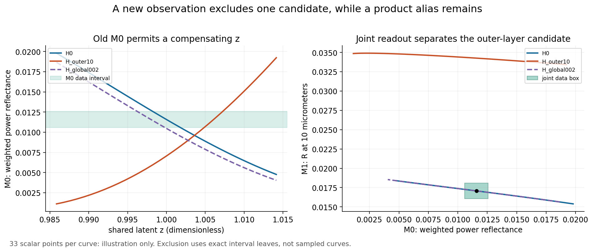
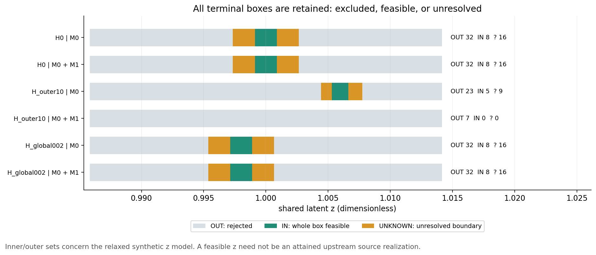
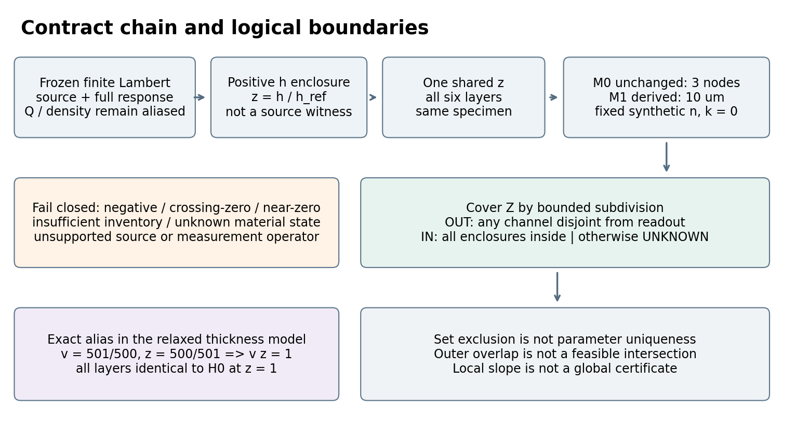

有限观测能排除哪些候选？
T07 · 第三轮工程研究手册 · local freeze · 2026-10-02
仅固定同状态合成模型。point12 partial；point2 conditional non-strict；正式模型链pending；heavy/device未执行。
PNG已查看；HTML静态链接已检，实际浏览器布局未验证。
原创图



01 · 有限观测究竟排除了什么
1.1 本轮新增问题与判据
本轮沿用 T06R3 的 S-AR-DUALIR6 六层膜系，固定材料状态、层序和光学常数。问题是：在来源允许的公共厚度尺度 z 范围内，“入射侧最外层比名义值厚10%”这个有限候选，能否同时解释两项有界反射读数？这是一项集合排除问题，不是重优化膜系，也不是重新画一次Jacobian秩图。
基础观测 M0 为原来的三个离散波长 4.25、4.26、4.27 μm，以 1/4、1/2、1/4 权重对功率反射率求和。本轮原样保留这一整个算子，并明确增加独立的 M1＝R(10 μm) 通道。M1是另一项标量光学测量，不是往原算子里偷偷增添节点，更不是把离散节点称为连续通带积分。两项算子都限定0°、delta角分布、无损各向同性、平面空间均匀薄膜、半无限无背面基片、零散射。M1的常数n/k被明确扩展到10 μm的同一合成样品状态，不能据此声称真实ZnS、YF3或Ge在10 μm有这些常数。
可证伪的具体陈述为：存在 z∈Z，使候选 H_outer10 的 M0 和 M1 都落在指定读数集合内。若覆盖Z的每个分支均被至少一个通道排除，则这一“存在”陈述在条件模型中为假。反之，外包络与读数重叠只说明排除程序未能拒绝，不证明存在实际交点。若一个非空参数盒的整幅包络包含在读数盒内，才能给出这个代理模型中的可行盒。
1.2 三个候选与一个共享变量
原记录按基片→入射介质列六层：ZnS surrogate 640.04 nm；YF3 surrogate 221.93 nm；ZnS surrogate 526.20 nm；YF3 surrogate 1289.66 nm；ZnS surrogate 661.91 nm；YF3 surrogate 1982.05 nm。n依次为2.2、1.5交替，n0＝1，ns＝4，k恒为0。这是恢复的数值种子，不是制造处方。
对原层号 i，定义 d_i(μm)＝d_i,legacy(nm)/1000 × z × m_i。所有层共享同一个z，绝不把六层各自独立抽样。H0 的六个 m_i 均为1；H_outer10 只有原层6的 m_6＝1.1；H_global002 的六个 m_i 均为1.002。原层6就是入射侧第一层。不同候选各有自己的存在量z：比较的是替代解释，不是强迫不同假设共用同一次误差实现。
z＝h/h_ref。继承h范围约为[3.3414319499,3.4373044933]×10⁻¹⁰ m，h_ref＝3.3893682215916026×10⁻¹⁰ m，因此Z≈[0.985856871077785,1.0141431289222151]。h非常小，但这里只作为名义多层厚度的无量纲相对归一化；每层还有其定义好的剂量倍率。它不是把一次不到纳米的沉积直接称作完整膜，也不是把几何响应按时间延长而默认不变。
1.3 读数集合、数据来源与挑选过程
指定合成中心 y0＝0.011583971，y1＝0.017070884，每项硬绝对误差 ε＝0.001。因而Y0＝[0.010583971,0.012583971]，Y1＝[0.016070884,0.018070884]。单位均为功率比，0.001相当于0.1个百分点。读数中心来自 H0,z＝1 的标量计算四舍五入；它们不是设备采集数据。随后以精确区间点计算检查这个已知点确实属于Y，不能把用同一模型造数据称为实验验证。
在冻结问题前做过一个有限标量筛选：外层倍率0.95、0.97、1.03、1.05、1.10，各9个z点；查看M0以及3.5、5、8、10、12 μm。选择1.10和10 μm，是为了构造一个原观测可以补偿而新观测可检验的反例。该筛选并非预注册实验、最优实验设计、波长全局搜索或区间证明。所有最终排除都重新由冻结合同及区间算法给出，不从网格“没看见交点”推断排除。
Y0×Y1是边际硬界构成的矩形。它不意味着噪声独立；任何满足这些边际界的相关误差都包含在矩形里。若有共同校准偏差b及其可证范围，应该保留 y_j＝f_j(z)+b+e_j 的联合图，并在(z,b)空间做存在量消元。本轮未捏造b的数据或协方差。ISO GUM §5.2要求考虑重要输入相关性，但那是标准不确定度传播框架，不会自动把此硬盒升级成95%覆盖区间。[SE-S04]
1.4 新合同如何防止默换
data/case.json含完整继承case，包括来源合同、响应定义、forward输出、响应hash、桥接hash和光学状态。inherited_binding绑定原case文件hash、完整bridge语义hash、原measurement/material以及recipe。derived_observation_contract另有自身hash，记录父算子hash、M0原对象、M1新对象、扩展后的离散材料适用域、共同样品条件、读数来源及误差语义。
程序首先检查85个依赖副本的字节数和SHA-256，再验证嵌入case与父副本完全相同。M0改角度、把背面打开、用新波长替代原节点或改常数状态，均不能沿用旧合同。本轮只得出“在这个绑定合同下”的结论。任何真实设备带宽、有限孔径、偏振、色散、背面、多批次变化都需要新合同及对应不确定度证据。
02 · 来源资格、共享潜变量与不能越过的物理边界
2.1 从来源到光学的完整链
本轮继承的链为：有限编码几何forward → 有界留存/净质量响应 → T05总质量率与角分布归一化桥 → 正净厚度集合 → 共同z映射 → T06受限光学算子 → 本轮有限观测逆像。dependencies/t06r3/data/case.json含完整forward；其嵌套依赖同时保留T05、T04、T03及相关冻结文件。reader脱离兄弟目录后仍可导入这条链并校验hash。
source_contract仍为预遮挡半球总质量率 Q_total∈[1.998,2.002]×10⁻⁶ kg/s、Lambert指数n＝1、c＝0、单个有限编码节点0和质量权1。Q_intensity＝Q_total/π恰用一次。T05原合同已说明：该转换以浮点编码为起点；后续有界计算针对这些编码值，不是宣称对转换时的超越π也完成物理计量认证。T06光学核另用Machin公式包含π，两者职责不混同。
响应定义仍是合成有效膜密度[1998,2002] kg/m³、固定留存角响应与零侵蚀等已声明条件。response_contract_sha256为0bc55900ac49fd95f5ee3ce5528a9462267aeb619d58fd0d4f7209736c25c4fd；bridge_contract_sha256为af6c8f107e1842ad8ad03e96eb56b76f0877d5d4444e8fa504c95fb05cb5c7e9。完整bridge语义hash为740bcd26e5b42da661b8ea4285cf8e5d76eadce94653ea31e804483d8cc83d24。只给出h点值而丢失其来源、响应及资格，不足以调用本轮结论。
2.2 Z是上游厚度的外包络，不是可实现性证书
记完整来源变量为u，物理/合成forward为h(u)。上游输出H包含允许u的厚度像，但未证明H内每一点都可由某个u实现。本轮把 z∈Z＝H/h_ref 作为松弛后的代理域。因此，若这个更大的域都不能解释读数，则受同一合同约束的来源实现也不能解释；这是排除方向的安全性。
相反，本轮给出的IN盒或z点只证明在“z可在Z中取值”的代理模型中可行，不能证明已找到Q、ρ、留存、几何历史的一个共同实现。把IN写成“真工艺可行”“已识别来源参数”会越过逻辑。若T08需要恢复来源参数，必须回到联合u域，把forward约束和观测约束一起求交，而不是把h的外包络当作与Q/ρ无关的独立测量。
2.3 同样品共享，不默认同批次或跨批次共享
在一个样品内，T06明确假设共同相对密度/剂量/几何影响，故d_i共享z。本轮M0、M1是同一静态样品的两项观测，也必须用同一个z。分别为两个通道拟合z0、z1会把物理同一性的约束撤掉，使参数集合变大，甚至制造假可行。
两个不同样品或批次没有这种默认资格。应写z_b，并明确哪些上游参数是批次共享、材料组共享或逐层独立。总体QCM标定误差与每批次留存误差可以形成部分相关图，但不能仅凭“同机器”设所有z相同。多批次复制观测次数不能当作同一膜的额外光学坐标。
本轮替代候选H0和H_outer10是解释同一未知样品的不同假设，每个假设可以在Z内选择不同z。这不等于预测两个同时制造样品的配对差。若要预测配对差，需明示两样品共享同一次latent实现；T06的paired_difference限定仍有效。
2.4 源项别名不能由膜厚候选识别解除
光学看到的是层厚及n/k，不能直接看到总蒸发率、密度、留存或源角分布。简单正净响应中h大致受 Q×transfer×retention/ρ 控制，相同组合可以由多个来源量解释。即使排除了某一层厚候选，也没有因此分别识别Q和ρ，更没有识别未知非Lambert角分布。本轮不通过新增观测悄悄给unknown来源赋予有界资格。
H_global002还提供更直接的结构别名：令全层倍率v＝501/500，z＝500/501，则vz＝1，所有层的d_i与H0,z＝1逐层相同。固定同状态n/k后，任何只依赖该相同膜系的光学观测都相同。该代数事实属于代理变量重参数化，既不是测量不足的偶然数值结果，也不能拿来证明上游两个真实批次确实能实现这些z。
2.5 失败关闭的物理guards
负净质量或厚度表示侵蚀/材料移除问题，不能夹成零厚度后当作正膜。跨零、零净量、h下端不超过1e-15 m、区间宽度不小于正下端、库存不足、unknown密度、样品状态不匹配、来源n/c不在有限Lambert资格内，都不进入正常光学映射。1e-15 m只是数值条件门槛，不是成核、连续覆盖、粗糙度或量子尺度模型的有效性阈值。
同一标签ZnS或YF3不保证相同致密度、晶相、成分、温度和n/k。QCM控制器里的density或bulk表值不是同状态实测膜密度。本轮的真实film参数继续unknown，material_calibration仍not_performed。point12保持partial，point2保持conditional non-strict；本轮无设备、生产或完整物理认证。
03 · 可执行的有界分支排除算法
3.1 集合、量词与三个不同输出
固定候选h的观测映射记作 f_h:Z→R^m，Y为硬读数集合。目标集 F_h＝{z∈Z | f_h(z)∈Y}。本轮不把F_h称为后验概率分布，也不给出置信水平。有限误差下F_h可以是不连通的多个区间；报告一个最外端连成的区间只能叫hull，不能把中间所有点都标为可行。
完整算法维护三个叶集合：OUT（已排除）、IN（整盒可行）、UNKNOWN（尚未分类）。最终满足 IN_union ⊆ F_h ⊆ IN_union ∪ UNKNOWN_union，条件是光学区间函数确实包含真值、初始域覆盖所有目标参数、叶分支无遗漏。仅当IN和UNKNOWN都空，才有F_h空的排除结论。存在IN或经验证的点见证只能证明代理模型非空，不能保证参数唯一，更不能证明真实材料模型成立。
SIVIA的原始工作把有界误差估计写成集合逆像，并以内外盒集合逼近可行域。[SE-S01] 作者参与的原始应用论文§III.A–B给出包含函数、二分及解/非解/边界盒的定义。[SE-S03] 下列实现针对这一个薄膜问题重新编写；不移用文献的雷达结果或把其一般收敛论述当作本代码已经形式化验证。
3.2 光学包含函数
按入射→基片顺序重排层号6,5,4,3,2,1，同时保留原层ID决定倍率。令 r_j＝(n_j−n_{j+1})/(n_j+n_{j+1})，从最底界面开始递推：
r_eff ← (r_j + r_next exp(4π i n_{j+1}d_j/λ))/(1 + r_j r_next exp(4π i n_{j+1}d_j/λ))。
最后R＝|r_eff|²。4π项来自往返相位2δ；δ＝2πnd/λ。n无量纲，d与λ都使用μm，指数无量纲。透明、正实n、0°的受限条件下Rs＝Rp，T只表示进入半无限基片的通量。Fresnel、层传播与功率规范的来源为Byrnes §§3–4；本轮没有用其论文作为材料常数数据。[SE-S02]
复数用实部/虚部矩形区间。算术沿用冻结T06 exact_intervals.py：Fraction精确有理运算，每步向外舍入到2⁻⁸⁰网格；π由Machin恒等式和交错反正切余项包含；正弦/余弦在有理中心做20项Taylor展开、余项上界及|sin′|、|cos′|≤1的半径膨胀。该路径不使用libm输出作为证明边界。
原始厚度和n的JSON float解释为其精确二进制编码；新的“1.1”“1.002”、波长和权重字符串解释为有理数。二者都在case中固定。显示用float经过向外nextafter转换；所有决策只使用精确端点字符串恢复的区间，绝不从图或小数显示判定排除。
若复分母模平方区间含零，返回[0,1]并计入fallback，继续细分或UNKNOWN；禁止用标量中心的非零分母“挽救”区间证明。R与[0,1]取交只有在所有无损被动限定已通过时才使用。本轮不支持任意复n、吸收基片、有限背面、角度分布或散射。
3.3 队列算法，逐步可复现
输入：绑定case、正区间Z、候选倍率、选定通道列表、最大节点数N、最小z宽度τ。初始化队列为(Z,depth=0)，三个叶集合为空。
1. 取出一个待分类盒B。如果节点预算已用完，将B完整保留到UNKNOWN，reason=node_budget；绝不丢弃待办队列 2. 对每个通道计算包含区间 [f_j](B)，并与Y_j比较。若任一维严格不交，将B放OUT，记录证伪通道与精确上下界。可以短路后续通道，因为一个矛盾足够 3. 若所有维的整个包含区间都在Y_j内，且没有分母fallback，将B放IN。这里是“整盒包含”，不是“盒中心落入” 4. 其余情况，若宽度≤τ或预算将耗尽，放UNKNOWN；否则以有理中点二分，两个闭子盒同时入队。向外舍入可能使分界端点有极微小重叠；允许重叠但禁止缺口 5. 队列空后输出所有叶、覆盖检查、各类数量、每次调用的合同hash和预算。若全部叶OUT，则candidate排除；若存在IN，则代理模型有可行盒；否则只标未决外包络重叠
models/set_exclusion.py是完整参考实现。没有局部拟合器、步长线搜索或随机起点参与分类。当前一维执行版只对公共z细分。工程扩展到多维时，必须给每个不确定量显式域，按归一化盒宽选轴、保留全部子盒及来源图；不能直接把逐层误差拆成独立六维再声称继承原相关性。
3.4 严格数值与条件物理的区别
精确有理区间提供的是编码的受限合成函数的包含逻辑。程序经过小测试与一次窄光学/单位独立核查，但没有形式化证明程序无bug。所谓excluded_encoded_model应读作“在声明合同及包含实现正确的条件下，该有限候选在整个Z上被排除”。它不是仪器认证、物理模型完整性证明或任意材料全局唯一性证书。
标量绘图、有限差分灵敏度和初始筛选都使用普通复浮点，属于非rigorous数值诊断，不能用作外包络；在输出中明确标记。局部数值满秩即使成立，也不能替代此覆盖算法，更不能越过全局别名。间隔误差、模型偏差、源合同与材料状态不知道时，应报告unknown，而不是缩小数值舍入误差来制造确定性。
3.5 停止、复杂度和缓存
一维深度大致随log₂(width(Z)/τ)增加，最坏叶数随width/τ增长；多维则可能指数膨胀。预算因此是算法合同的一部分。缓存键必须包含完整case语义hash、候选、通道、精确盒端点与算术版本；只用厚度中心或recipe名会复用错误合同。本版无需缓存，避免把旧算子结果复用到新算子。
当前每run最多127节点、τ＝0.0004，六次run总上限762节点。到达τ的UNKNOWN不是失败，应原样交给下游。进一步细分可能收紧外包络，但不保证消除所有边界UNKNOWN；加入真实模型差异会扩大可行集合。reader可重新运行整个tiny，也可用测试只重放决定性排除及点见证。正式批量/设备计划默认plan_only。
04 · 数值结果：拒绝一个候选，保留一个结构别名
4.1 新观测排除的到底是哪一个假设
H_outer10在原M0下有代理可行点z＝503/500＝1.006。点区间给出 M0≈0.01152073742754016，整点包络在Y0内。它与合成中心0.011583971相差约6.3234×10⁻⁵，远小于0.001硬误差。因此“原观测下无法排除”不只是两个宽hull重叠，而有实际参数点见证。但这是有界读数意义的可行，不声称恰等于中心值，也不声称z已经由上游来源变量实现。
加入M1后，完整覆盖Z的13个已评估节点产生7个终端OUT盒，IN＝0，UNKNOWN＝0。因此，在冻结的合成合同和来源厚度外包络上，没有任何z同时满足两项读数。一个叶在M0维即被排除，其余六个在M1维被排除。不能把这一结果简化成“所有z都被10 μm单独排除”，因为程序实际保存的是逐叶的联合证伪。
最靠近边界的M1证伪叶为z≈[0.9858568711,0.9929284355]，其M1下界0.018112231126387757高于Y1上界0.018070884，差约4.1347×10⁻⁵。其余M1叶下界约0.02471至0.02552，间隔较大。这个最小间隔也提醒：若引入未计入的模型差异或误差膨胀，当前盒划分的证明可能失效；应重新传播和分类，不可沿用“已排除”标签。
4.2 保存的内外集合，不仅是一个最佳拟合点
H0，M0：111个评估节点，终端OUT32、IN8、UNKNOWN16；IN与UNKNOWN的hull约[0.9973481633,1.0026518367]。IN盒hull约[0.9991160544,1.0008839456]，该hull仅概括范围，逐盒清单才是准确集合。
H0，M0+M1：同为111节点与32/8/16分类，当前分辨率下外集合没有进一步收紧。新增通道能拒绝H_outer10，却未必对名义候选的z精度有同等收益。不要把“多一个通道”直接翻译成“每个参数误差都会变小”。
H_outer10，M0：73节点，OUT23、IN5、UNKNOWN9；外集合hull≈[1.0044197278,1.0077345236]。加入M1后为空，证据为整域覆盖排除，而非优化器没有找到解。
H_global002，M0或M0+M1：每种情况111节点，OUT32、IN8、UNKNOWN16，外集合hull≈[0.9953592858,1.0006629592]。其z范围相对H0向下移动，这正是v×z共同缩放的表现。
全部六次tiny共评估530节点和1760个单波长光学包含调用，无Monte Carlo、无优化器、无设备。完整精确叶数据在verification/tiny_results.json，图中区间只用于阅读，不承担数值判定。
4.3 真正的结构别名与单纯重叠
H0,z＝1的两个点包络约为(0.011583971201202035,0.01707088413095479)。H_global002,z＝500/501的每一层厚度与之完全相同，因此两个输出逐层代数相同，区间点计算也验证均落入Y。不同区间运算次序可能使末位外包络宽度不同，这不破坏精确乘积恒等式。
这是一个全域辨识警示：只有光学数据时，若模型把v和z都作为自由因子，光学不可能单独分解它们。即使使用更多波长、角度或相位，只要两个候选仍表示同一实际层厚与n/k，就不会区分它们。需要非光学的独立来源/剂量/密度信息，或可检验的先验约束，而不是更强优化器。
相反，两个外包络重叠不构成别名证明。简单反例：真实集合A＝{0,2}，B＝{1}互不相交，但hull(A)＝[0,2]与hull(B)＝[1,1]相交。多通道矩形外包络还可能由不同z分别取得各维极值，矩形交叠并不说明同一个z能同时满足所有通道。本轮始终在同一z盒上联合分类，并用全叶覆盖或见证区分“证明排除”“证明代理非空”“未决”。
4.4 局部灵敏度只说明一个方向
仅作为诊断，在H0,z＝1做两组中心差分步长10⁻⁴和5×10⁻⁵：dM0/dz约−0.560904、−0.560905；dM1/dz约0.108604、0.108604。它们是无量纲对无量纲的斜率，非rigorous导数界。数值一致能排除一些明显步长错误，但没有证明导数全域范围或单调性。
这里没有再次计算R2的SVD秩。局部非零斜率最多说明某点附近对z有响应；存在有限误差、其它未知量、远分支和结构乘积别名时，仍不保证全局唯一。H0的第二通道不收紧当前外集合，也可从M1局部方向相对不敏感得到直观解释，但不能由斜率替代集合运算结论。
4.5 为什么不把T＝1−R当作第三个观测
在本轮无损、0°、无散射、半无限末介质条件下，进入基片的功率T＝1−R。若T是由R计算的，同一读数信息只是可逆坐标变换；把Y_R映到1−Y_R后不会再排除任何参数。测试明确验证包含和不交关系不变。
如果真实设备用独立探测器测T，可能对误差或失配有诊断作用，但需要定义背面、参考归一化、校准相关性、损失和仪器本底；那会是新测量合同。本轮不声称有独立T数据，也不把由1−R生成的数值当作实验交叉验证。
05 · 如何把条件排除转成工程上可检验的问题
5.1 目前可以执行的判断
给定本包合同、读数盒和候选，读者可以独立复算：H_outer10在M0下非空，在M0+M1下为空；H0与H_global002保持可行且存在精确乘积别名。可以把这看成实验设计的一个候选动机：在原通道出现补偿歧义时，另一光学条件可能排除某个特定备选层厚形状。不能外推为10 μm永远最佳、两个通道足以重建六层厚度或任何实际仪器可以达到0.001硬界。
5.2 真实验证必须先补齐的合同
第一，取得同一膜样品状态的n(λ)、k(λ)、成分、密度、温度、基片与工艺记录。测量或材料模型须覆盖原M0三个节点以及新10 μm通道。给每项来源、插值、外推域和不确定度，不能只写“用ZnS数据库”。合成常数向10 μm扩展只是一条计算假设，不能代替此步骤。
第二，明确两项光学观测是否确为同一样品、同位置、同方向、同一稳定状态。真实有限光斑对面内厚度分布可能先平均强度再形成读数，不能拿中心厚度直接替代面积积分。源侧的局部沉积模型与测量侧的面积算子必须绑定。
第三，界定实际光谱响应、角度分布、偏振、参考标准、探测器线性、暗噪声、重复性及共同校准偏差。离散三个节点只是合成合同，实际带宽不是把标称波长当delta；应对实际权函数求积分并给出积分误差。不要用两种网格结果相近冒称外包络。
第四，明确基片厚度、背面反射、吸收、相干性及散射。当前T进入半无限基片并不等于穿透整片基片的透过率。若基片有限或背面有效，需扩展forward和能流定义，旧判据不自动沿用。
第五，先验Z要有可检验的来源范围。若Q/ρ/留存/几何的联合关系重要，应对其联合域传播，区别“所有可能厚度的外包络”和“可实际实现厚度的集合”。扩大任何一个实测不确定度都可能撤销排除，因此审计要保存完整合同，而不只保存最终候选标签。
5.3 误差界与模型差异的压力测试
令总允许误差为ε_readout+ε_calibration+ε_model，若各项仅有硬边际界，可先做安全Minkowski和；若共享偏差可建联合变量，则保留相关结构可能减少不必要的膨胀。本轮ε_model＝0仅因合成模型定义。真实模型差异未知时不能设置为0来给出确定拒绝。
一次排除证书的最小分离间隔不是仪器的设计规格。该值受分支划分和外包络松紧影响；更细的盒可能增大可证明间隔，扩大物理不确定度则可能缩小它。应固定物理合同后再区分数值细分、测量误差和模型偏差的贡献。不能把计算更精密当成实验更准确。
5.4 多批次与候选维度扩展
若目标从三项固定假设变成连续的外层倍率v6∈[0.9,1.1]，算法必须在(z,v6)联合盒上进行包含/排除，保存可能的不连通可行区域。v6范围只是下一阶段研究建议，没有在本轮执行。对全部六层、n/k参数、共同偏差或多批次变量的联合反演可能迅速变成高维问题；需要先问哪些独立证据能约束它们，而不是直接启动大规模多起点。
不同批次b使用z_b；共享全局校准参数和批次独立项应作为不同节点。若未来使用共同误差配对抵消，需证明配对关系和同latent实现，不把当前同样品M0/M1合同横移到两个批次。任何未测的相关系数保持unknown。
5.5 算力、审查与发布闸门
models/validation_driver.py默认仅输出计划。它不打开设备、不下载软件、不提交任务、不通过其它执行入口绕过quota，也没有正式heavy执行模式。完整批量、设备实验、连续波段认证、多批次联合反演都未运行。
一次窄独立核查只核对光学规范、单位、层序及四个标量点；不替代正式DeepSeek/Seed/Sol模型链审查。point12 partial、point2 conditional non-strict、formal review pending全部继承。下一题建议在T08围绕“预算受限的候选排除/保留准则”继续，但交接文件本身不启动T08，不授权上传、push、生产配方优化或设备安排。
06 · 离线复算、manifest与证据等级
6.1 文件结构和最小环境
README给出运行命令。models/set_exclusion.py是集合分类与标量绘图参考；run_tiny.py重算六个固定run；tests/test_reference.py执行有限guard、精确叶关系、决定性排除重放与点见证；validation_driver.py默认plan_only。光学与区间核及完整来源链是dependencies中的未改副本，85项字节hash由data/frozen_dependencies.json绑定。
核心复算仅依赖Python标准库。图重建另需matplotlib，reader里的PNG/SVG已预生成，阅读与验证不需它。HTML无远程资源、脚本或字体；原始Markdown和JSON可直接读取。无需安装依赖即可做reader校验与核心测试。
解压后先执行：python models/reader.py。再执行：PYTHONDONTWRITEBYTECODE=1 python -m unittest discover -s tests -v。重新生成tiny可执行：PYTHONDONTWRITEBYTECODE=1 python models/run_tiny.py。重算会覆盖verification/tiny_results.json中的运行时间，使冻结包校验不再匹配原hash；应在副本中运行，或将重算输出另存并比较逻辑字段。hash变化只表明字节不同，不自动意味着科学结果不同。
6.2 精确包边界
verification/reader_manifest.json列出每个发布载荷的相对路径、长度与SHA-256。它不列自己、压缩包、freeze/检查控制回执、sources/originals及本地原文归档回执。reader不仅校验列出的文件，也检查实际载荷文件集合，防止悄悄缺文件或多出未列文件。禁止symlink、路径逃逸、外部脚本及外部资源。
压缩包恰为manifest载荷加manifest本身。freeze_receipt在压缩包之外绑定archive的SHA-256与大小、manifest的SHA-256、实际成员数，以及独立解压、负向篡改、视觉QA等回执的hash。回执不把自己递归纳入其hash。最终final_receipt_check再次核对数字；没有上传或push。
论文原文只存在单独本地sources/originals，未进入reader、manifest或压缩包；来源登记只保存公共论文地址、使用范围和阅读证据，不保存账号、私有token或浏览器会话。原文版权仍属权利人，本包正文与图是原创推导/组织及数值结果，不能把公开可读等同于有权再分发全文。
6.3 tiny测试证明了什么
15个标准库测试包括：完整副本hash；M0原对象一致；来源正净资格；继承forward篡改拒绝；派生算子hash篡改拒绝；不支持背面拒绝；负净/跨零/近零/库存/非Lambert/状态guard；逐层单位与顺序；保存叶覆盖及分类关系；13节点决定性排除重放；三个点见证重放；预算必须保留UNKNOWN；全层乘积别名；T＝1−R约束冗余；外包络重叠不是实际交集的反例。
测试不是对任意输入的数学形式化证明。保留了与算法相同的包含核，独立光学核查才使用不同的特征矩阵路径。来源链的实际设备正确性、连续源认证和真实film状态均未被这些测试覆盖。
6.4 视觉与浏览器限制
三张原创图导出SVG及PNG，逐张查看实际PNG像素，检查标签、区间颜色、图例、边距和可读性。HTML只做结构检查：本地链接与锚点存在、没有远程资源或脚本、静态内容完整。继承的浏览器/headless/socket限制仍未解决；本轮不重复启动headless、不开放socket、不升级权限以绕过限制。因此HTML实际浏览器布局保持unverified，PNG检查不得写成HTML全通过。
6.5 复核与交付状态
作者检查完成后局部冻结，窄独立光学/单位检查只发生一次。正式模型链审查仍pending，point12仍partial，point2仍conditional non-strict。设备与heavy状态均为plan_only/not_run。只写本轮目录，冻结后的旧轮次、根计划与产品目录不变；outside_scope_check以启动前后项目文件hash比较验证这一点。
T08_ROUND3_HANDOFF.md只提供下一轮有限候选，不自动开始下一题。任何进一步实验、计划执行、远端发布或产品集成都需要单独明确任务。
一手来源及使用边界
- Jaulin and Walter (1993), Set inversion via interval analysis for nonlinear bounded-error estimation：Bounded-error estimation as set inversion and inner/outer box concept; not an optical result or formal verification of this code；Publisher abstract in search result and author publication list read; publisher full-text open unavailable
- Steven J. Byrnes, Multilayer optical calculations, v5：Fresnel, layer propagation, dimensionless roundtrip phase and power normalization; no measured material nk supplied；Primary full HTML sections 2–4 read; existing local v5 PDF archived separately
- Soares, Arnold-Bos, Jaulin, Vasconcelos and Maia, An interval-based target tracking approach for range-only multistatic radar：Inclusion function, bisection and feasible/nonfeasible/boundary boxes only; no radar performance claim transferred to optics；Author-hosted primary PDF, page 2 / section III.A–B read; original archived separately
- JCGM 100:2008, section 5.2 Correlated input quantities, official ISO HTML：Shared-input correlation must be considered; hard deterministic boxes here are not GUM coverage certification；Official primary section 5.2 text read
原文单独本地保存，不入reader载荷。报告与图均为原创，来源不提供真实膜常数认证。
离线复算文件
- README.md
- data/case.json
- data/frozen_dependencies.json
- verification/tiny_results.json
- verification/unit_tests.txt
- verification/batch_plan_receipt.json
- reviews/narrow_optical_unit_check.md
- models/set_exclusion.py
- models/run_tiny.py
- models/reader.py
- models/validation_driver.py
- tests/test_reference.py
- T08_ROUND3_HANDOFF.md